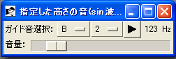

OREMO マニュアル - 音叉窓の説明

- ＜概要＞
- 指定したキーの音を聴く窓です。音はフォルマントボコーダーの「あ」です（delay lamaみたいな声）。
- ＜使い方＞
- ガイド音選択で再生する音の高さを指定する。
- （C=ド、D=レ、…B=シ。数字=オクターブの番号。番号が大きいほど高い。）
- 音量スライダを動かして音量を指定する。（右に行くほど大きくなる。）
- 再生ボタンを押して音を聴く。
メニューの説明へ
音叉窓の説明へ
オーディオI/O設定の説明へ
詳細設定の説明へ
マニュアルトップページへ